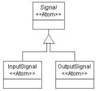
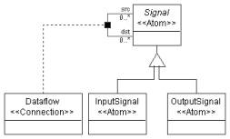
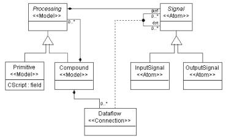
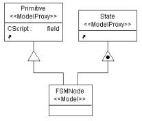
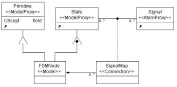
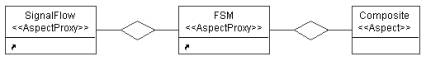
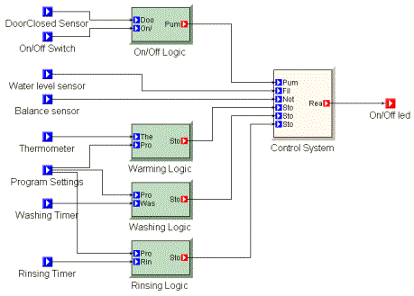
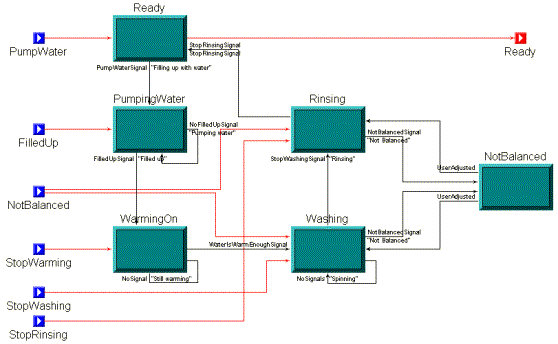

Figure 1: Inheritance
Signals can be connected to form the signal flow. We need a connection object (Dataflow) and a connector to describe the relationship of these objects. Both input signals and output signals can be connected together, so it is convenient to make this relationship at the base signal object (See Figure 2).

Figure 2: Dataflow
The signal atom and dataflow connection are both parts of a processing environment. Furthermore, Signal atom will act as a port of the Processing model. In our model, we have primitive processes and compound processes. Primitive processes are the leaf nodes in the signal flow hierarchy that implement elementary computations in the graph. Compound processes can contain signals, primitives and/or other compound processes. While assigning the signal atom and dataflow connection to models, we should keep these rules in mind. Again, Processing model will be an abstract model, since we only want to instantiate Primitive and Compound processes in our signal flow model.

Figure 3: Class diagram of signal flow model
To make Signal atoms appear as GME ports in Processing models left click on the containment connection between the Signal atom and the Processing model and make the “Object is a port?” attribute in the Attribute Panel “true”. Make sure the Attribute Panel shows the attribute settings for the containment you meant to. We did not give a special name to this connection, so you should see the default name “Containment” in the Attribute Panel indicating the active object with the revealed settings.
Set the “In root folder?” attribute for the Compound model. See Figure 3 for our final metamodel of the signal flow paradigm.
We need to define an attribute of the Primitive class. Following the steps in Tutorial 1, switch to Attribute aspect and add a field attribute to the Primitive class. We can name it “CScript”. In the signal flow models this attribute will contain the C function that implements the functionality of the given Primitive.
In GME new inheritance operators were also introduced to provide finer control over inheritance. When the new class needs to be able to play the role of the base class, but its internals need not to be inherited, we use interface inheritance. In this case, all associations and those compositions where the base class plays the role of the contained object are inherited. On the other hand, when only the internals of a class are needed by a subclass, we use implementation inheritance. In this case, all the attributes and those compositions where the base class plays the role of the container are inherited. Notice that the union of these two new operators is the standard UML inheritance.
Following the steps in Tutorial 1, insert a new paradigm sheet into the root folder. In this case we need to define a new class (FSMNode) that inherits from both Primitive and State. Inheriting from State through standard UML inheritance would mean that a State could contain this new type of node violating one of our objectives. Instead, we use implementation inheritance, which means, FSMNode can contain whatever a State can, but it cannot act as a State. Hence, it cannot be inserted into a State. Neither can FSMNodes be connected together by Transitions.
Let’s create the class diagram! For Primitive and State we can use proxies, i.e. references pointing to classes defined elsewhere in our metamodel. To define a proxy, drop a proxy class onto your sheet. Note that we need model proxies for Primitive and State. At this point these references (i.e. the proxies) do not refer to anything. To make them refer to a specific class, open the proper paradigm sheet you imported and drag and drop one of the above-mentioned classes onto your proxy. Even if you have created the reference properly, you will not see any actions confirming your steps, but if you right click on your proxy object and select the Properties option you will see in the Refers list box the reference you have created. (Or you can use the tooltip feature: move your mouse over the proxy and wait until a yellow label pops up.)
You can see this part of the class diagram in Figure 4.

Figure 4: Implementation inheritance in FSMNode
Next, we want to make the input signals and output signals of the FSMNode process to be mapped to certain States it contains using connections. To achieve this, we introduce a new type of connection (SignalMap) connecting States and Signals together. This connection will be contained in the new FSMNode class only. To make this connection bi-directional – as desired – clear the default rolename (“src” and “dst” respectively) in the Attributes window of both connections drawn to the connector object.
For the Signal we can use an atom proxy. An alternative way of creating a proxy (reference) in GME is dragging your class from its definition window and dropping it onto your new paradigm sheet while holding down the CTRL and the SHIFT keys.
Figure 5. shows the final composed metamodel with new SignalMap connection.

Figure 5: Class diagram of the composed metamodel

Figure 6: Aspect of the composite metamodel
Switch to Set Mode and right click the new Composite aspect. The only class you have to assign to this aspect by left clicking on it is the SignalMap connection.
To be able to use a composite signal flow paradigm (t2Hybrid.xme), create it first by interpreting your metamodel. After you have it successfully interpreted, register your new paradigm.
Now you can create a composite signal flow. A simplified model describing a washing machine is shown in Figure 7. The white colored Control System is an FSMNode , the light green (light gray) Logics are Primitives, and the whole system is in a Compound process. The Control System is described by a state machine. (See Figure 8.) The dark green (dark gray) colored boxes stand for States.

Figure 7: Laundry model

Figure 8: State machine in compound process
You can define your own icon files for objects by setting the Icon name and Port icon name attributes of the classes in the Attributes window. It makes sense to define your own icon path by invoking File/Settings…in the target environment and giving only the file name and its extension in the Attributes window in the metamodels. The difference between Primitive models, Compound process models and FSMNode models can simply be indicated by defining different colors for different model classes, too. You can change the color of the model boxes in the Preferences window by setting the Color property.
| << Previous Lesson | Complete List | Next Lesson >> |